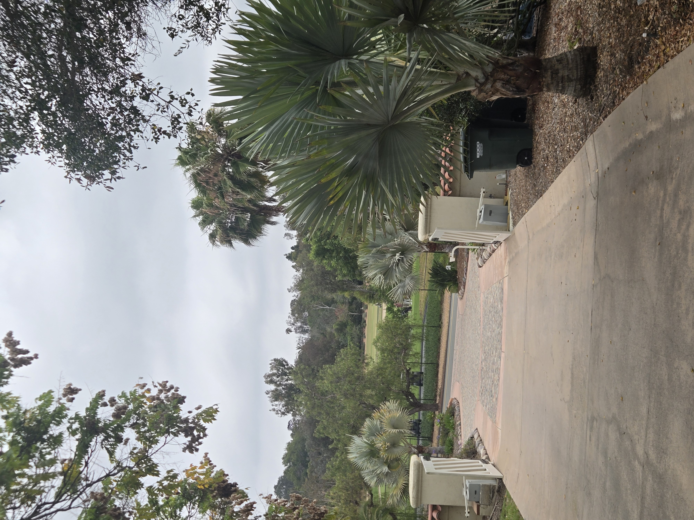

Add long-term character, shade, and resort-style presence with the right palm in the right location.
San Diego Palm Protection helps homeowners think through premium palm selection, sourcing, placement, planting coordination, and aftercare planning.
Focused on North County San Diego, including Escondido, Poway, Rancho Santa Fe, Lake Hodges, and nearby estate communities.
A palm can become the defining feature of a property. The wrong palm can outgrow its space, look out of place, struggle in the wrong exposure, or create expensive problems later.
This service is for homeowners who want guidance before adding a major palm or specimen plant — especially when the goal is a cleaner, more mature, more premium San Diego landscape.

Simple, practical support from early idea to long-term palm health.
We look at the space, sun exposure, irrigation, access, slope, existing palms, and the overall landscape style you want to build toward.
You get practical options based on size, growth rate, appearance, budget, maintenance, and long-term fit for the property.
We can help identify quality nursery options, think through transport and access, and coordinate planting support when needed.
The right choice depends on your property, but these are examples of palms that can create a stronger, more intentional landscape.
Large silver-blue fan palm with major visual impact. Best for open spaces where it has room to become a true statement specimen.
A classic San Diego estate palm. Mature CIDPs can be extremely valuable landscape assets, but they need serious long-term care.
A tough, attractive blue fan palm option for dry Southern California landscapes and properties that want a more distinctive look.
A smaller, clumping palm that can work well where a giant specimen would overpower the space.
Some properties can support more tropical-looking palms in protected microclimates, especially near patios, pools, or sheltered areas.
Cycads are not palms, but they pair beautifully with premium palms and can add a sculptural, living-heirloom feel to a property.
The goal is palm-focused guidance: helping you choose palms that fit your property, then protecting those palms after they are planted. That means thinking about aesthetics, growth habit, access, irrigation, maintenance, and long-term health before money is spent.
Start With Photos of Your SpaceThis service is especially useful when the palm will be a visible part of the property’s long-term identity.
For homeowners who want curb appeal and a stronger first impression without choosing the wrong species or size.
For resort-style outdoor spaces where palm selection, litter, shade, scale, and roots matter.
For properties where palms are treated as long-term landscape assets, not disposable decoration.
Send photos of your property, the area you want to improve, and any palms you are considering. Include rough dimensions, sun exposure, irrigation notes, and whether you want a bold specimen, a tropical feel, screening, or a more polished estate look.
📞 Call or Text 262-492-3135